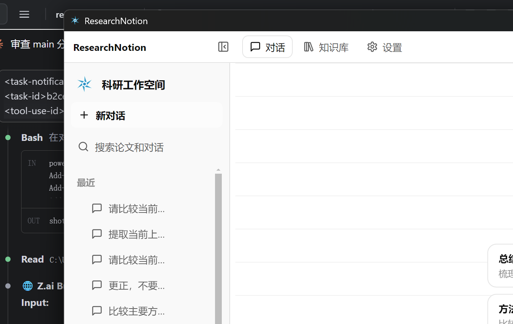
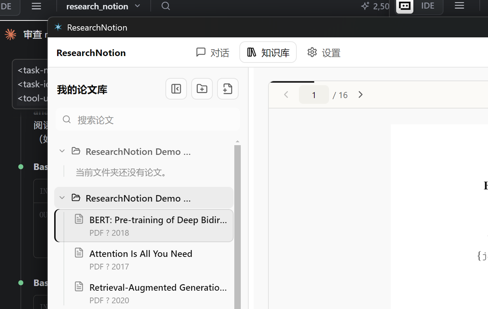

本地优先 · 数据不出本机
你的个人科研
论文知识库
借鉴 Notion AI 的对话入口与 Codex 式工作台体验，把本地论文库、PDF 阅读器和自主调证的 AI Agent 组合为桌面端科研助手。

论文 AI 对话：Agent 自主读取论文取证，回答附页码引用，一键跳回原文


借鉴 Notion AI 的对话入口与 Codex 式工作台体验，把本地论文库、PDF 阅读器和自主调证的 AI Agent 组合为桌面端科研助手。

论文 AI 对话：Agent 自主读取论文取证，回答附页码引用，一键跳回原文

Dify Tool Agent 自主调用 16 个本地工具：按问题读取当前页、章节、大纲、全文检索或跨库证据，多轮工具调用后作答，不编造。
回答中的引用标注原文页码与片段，点击即可跳回 PDF 对应位置，结论可核验。
导入 PDF / Markdown 自动生成结构化论文卡片：研究问题、方法、贡献与关键词，文件夹树拖拽整理。
问题需要时，Agent 自动检索 arXiv 与 Semantic Scholar，把最新相关工作与本地论文对照回答。
论文原件、对话、设置全部保存在本机 SQLite 与本地目录；API Key 用系统安全存储加密，不上传。
身份、课题与偏好长期记忆按需注入对话；三档输出速度实时切换，流式呈现思考与工具进度。
Agent 决策发生在 Dify，证据取证发生在本机——论文正文永远不需要离开你的电脑。